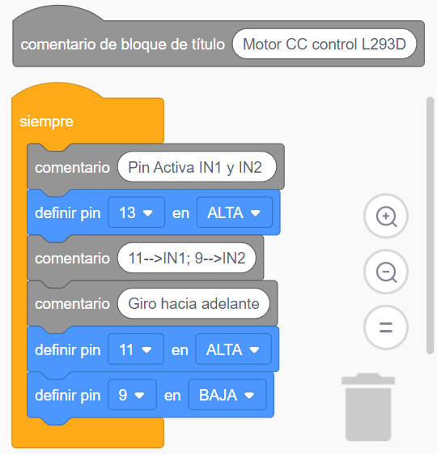

Para poder controlar los motores de cc (corriente continua) podemos utilizar un chip que se denomina doble puente H ó L293D. Es un componente tan común que lo podemos encontrar en TinkerCAD.
Su conexión es muy sencilla, aunque hay que saber a para qué sirve cada patilla,si pasamos el ratón por cada patilla TinkerCAD nos indica su uso.
Cada uno de los laterales sirve para el control de un motor. Vamos a describir un lateral que hemos colocado hacia abajo en el simulador, las dos patillas centrales son tierra. A la izquierda estaría la Salida 1 (OUT1) y a la derecha la Salida 2 (OUT2).
Una patilla más hacia la izquierda del OUT1 estaría la Entrada 1 (IN1), que hemos conectado al Pin 11.
Una patilla más hacia la derecha del OUT2 estaría la Entrada 2 (IN2), que hemos conectado al Pin 9.
Las patillas de potencia en el lateral de abajo a la derecha y en el lateral de arriba a la izquierda, está conectadas a 5V.
Por último la patilla del lateral de abajo a la izquierda activa las salidas 1 y 2, y la hemos conectado al Pin 13.
Vamos a programar nuestro circuito para tres supuestos del motor:
GIRO HACIA ADELANTE

TinkerCAD. Elaboración propia.. Código giro hacia adelante.(CC0)